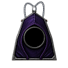
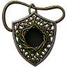
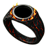
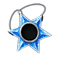
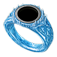
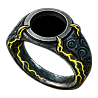
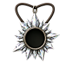
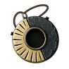
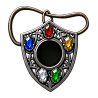

Feed a unique with Perfect gems in the Horadric Cube. Each gem adds its bonus; the last feed grants a completion bonus.
The Eye of Reckoning cannot reroll gem-fed uniques. Corrupted copies cannot be fed. Choose a gem from the item’s menu below, then press Transmute.
Result tooltips show the item’s own stats, the bonuses from filling its feed limit with that gem, and the completion bonus. You can mix gems within the shared limit.
Single gem
One Perfect gem, fed up to the limit.

Duskward
Pendant · Required level 24
Perfect-gem menu

Completion bonus · feed 10/10
Damage Reduced by 3
Added once, alongside the final gem’s feeding bonus.
Where it drops
- Plain monsters · Normal · 0.00003741% (1 in 2,672,842) · 0% magic find; Plain monsters · Nightmare · 0.00003493% (1 in 2,862,860) · 0% magic find; Plain monsters · Hell · 0.00002314% (1 in 4,322,051) · 0% magic find · earliest drop: Normal, Act I
- Champions · Normal · 0.000399% (1 in 250,635) · 0% magic find; Champions · Nightmare · 0.0001253% (1 in 798,297) · 0% magic find; Champions · Hell · 0.000104% (1 in 961,387) · 0% magic find
- Unique monsters · Normal · 0.0005736% (1 in 174,348) · 0% magic find; Unique monsters · Nightmare · 0.0002694% (1 in 371,208) · 0% magic find; Unique monsters · Hell · 0.0002% (1 in 499,969) · 0% magic find
- Gilded Fallen · Normal · 0.009567% (1 in 10,452) · 0% magic find; Gilded Fallen · Nightmare · 0.006614% (1 in 15,120) · 0% magic find; Gilded Fallen · Hell · 0.004321% (1 in 23,143) · 0% magic find
The Honing Edge
Signet · Required level 24
Perfect-gem menu
Completion bonus · feed 10/10
10% Bonus to Attack Rating
Added once, alongside the final gem’s feeding bonus.
Where it drops
- Plain monsters · Normal · 0.00003087% (1 in 3,239,808) · 0% magic find; Plain monsters · Nightmare · 0.00003211% (1 in 3,114,445) · 0% magic find; Plain monsters · Hell · 0.00002193% (1 in 4,559,755) · 0% magic find · earliest drop: Normal, Act I
- Champions · Normal · 0.000266% (1 in 375,953) · 0% magic find; Champions · Nightmare · 0.0001155% (1 in 866,143) · 0% magic find; Champions · Hell · 0.00009932% (1 in 1,006,818) · 0% magic find
- Unique monsters · Normal · 0.0005736% (1 in 174,348) · 0% magic find; Unique monsters · Nightmare · 0.0002483% (1 in 402,757) · 0% magic find; Unique monsters · Hell · 0.000191% (1 in 523,596) · 0% magic find
- Gilded Fallen · Normal · 0.009567% (1 in 10,452) · 0% magic find; Gilded Fallen · Nightmare · 0.006113% (1 in 16,357) · 0% magic find; Gilded Fallen · Hell · 0.004184% (1 in 23,902) · 0% magic find

Fenward
Pendant · Required level 28
Perfect-gem menu

Completion bonus · feed 10/10
+5% to Maximum Poison Resist
Added once, alongside the final gem’s feeding bonus.
Where it drops
- Plain monsters · Normal · 0.00003741% (1 in 2,672,842) · 0% magic find; Plain monsters · Nightmare · 0.00003493% (1 in 2,862,860) · 0% magic find; Plain monsters · Hell · 0.00002314% (1 in 4,322,051) · 0% magic find · earliest drop: Normal, Act I
- Champions · Normal · 0.0001342% (1 in 745,360) · 0% magic find; Champions · Nightmare · 0.0001253% (1 in 798,297) · 0% magic find; Champions · Hell · 0.000104% (1 in 961,387) · 0% magic find
- Unique monsters · Normal · 0.0002893% (1 in 345,608) · 0% magic find; Unique monsters · Nightmare · 0.0002694% (1 in 371,208) · 0% magic find; Unique monsters · Hell · 0.0002% (1 in 499,969) · 0% magic find
- Gilded Fallen · Normal · 0.004914% (1 in 20,351) · 0% magic find; Gilded Fallen · Nightmare · 0.006614% (1 in 15,120) · 0% magic find; Gilded Fallen · Hell · 0.004321% (1 in 23,143) · 0% magic find
The Spreading Blight
Signet · Required level 28
Perfect-gem menu
Completion bonus · feed 10/10
-5% to Enemy Poison Resistance
Added once, alongside the final gem’s feeding bonus.
Where it drops
- Plain monsters · Normal · 0.00003087% (1 in 3,239,808) · 0% magic find; Plain monsters · Nightmare · 0.00003211% (1 in 3,114,445) · 0% magic find; Plain monsters · Hell · 0.00002193% (1 in 4,559,755) · 0% magic find · earliest drop: Normal, Act I
- Champions · Normal · 0.0001107% (1 in 903,467) · 0% magic find; Champions · Nightmare · 0.0001155% (1 in 866,143) · 0% magic find; Champions · Hell · 0.00009932% (1 in 1,006,818) · 0% magic find
- Unique monsters · Normal · 0.0002387% (1 in 418,918) · 0% magic find; Unique monsters · Nightmare · 0.0002483% (1 in 402,757) · 0% magic find; Unique monsters · Hell · 0.000191% (1 in 523,596) · 0% magic find
- Gilded Fallen · Normal · 0.005241% (1 in 19,079) · 0% magic find; Gilded Fallen · Nightmare · 0.006113% (1 in 16,357) · 0% magic find; Gilded Fallen · Hell · 0.004184% (1 in 23,902) · 0% magic find
Forgeward
Pendant · Required level 30
Perfect-gem menu

Completion bonus · feed 10/10
+5% to Maximum Fire Resist
Added once, alongside the final gem’s feeding bonus.
Where it drops
- Plain monsters · Normal · 0.00003741% (1 in 2,672,842) · 0% magic find; Plain monsters · Nightmare · 0.00003493% (1 in 2,862,860) · 0% magic find; Plain monsters · Hell · 0.00002314% (1 in 4,322,051) · 0% magic find · earliest drop: Normal, Act I
- Champions · Normal · 0.0001342% (1 in 745,360) · 0% magic find; Champions · Nightmare · 0.0001253% (1 in 798,297) · 0% magic find; Champions · Hell · 0.000104% (1 in 961,387) · 0% magic find
- Unique monsters · Normal · 0.0002893% (1 in 345,608) · 0% magic find; Unique monsters · Nightmare · 0.0002694% (1 in 371,208) · 0% magic find; Unique monsters · Hell · 0.0002% (1 in 499,969) · 0% magic find
- Gilded Fallen · Normal · 0.004914% (1 in 20,351) · 0% magic find; Gilded Fallen · Nightmare · 0.006614% (1 in 15,120) · 0% magic find; Gilded Fallen · Hell · 0.004321% (1 in 23,143) · 0% magic find

The Banked Fire
Signet · Required level 30
Perfect-gem menu
Completion bonus · feed 10/10
-5% to Enemy Fire Resistance
Added once, alongside the final gem’s feeding bonus.
Where it drops
- Plain monsters · Normal · 0.00003087% (1 in 3,239,808) · 0% magic find; Plain monsters · Nightmare · 0.00003211% (1 in 3,114,445) · 0% magic find; Plain monsters · Hell · 0.00002193% (1 in 4,559,755) · 0% magic find · earliest drop: Normal, Act I
- Champions · Normal · 0.0001107% (1 in 903,467) · 0% magic find; Champions · Nightmare · 0.0001155% (1 in 866,143) · 0% magic find; Champions · Hell · 0.00009932% (1 in 1,006,818) · 0% magic find
- Unique monsters · Normal · 0.0002387% (1 in 418,918) · 0% magic find; Unique monsters · Nightmare · 0.0002483% (1 in 402,757) · 0% magic find; Unique monsters · Hell · 0.000191% (1 in 523,596) · 0% magic find
- Gilded Fallen · Normal · 0.005241% (1 in 19,079) · 0% magic find; Gilded Fallen · Nightmare · 0.006113% (1 in 16,357) · 0% magic find; Gilded Fallen · Hell · 0.004184% (1 in 23,902) · 0% magic find

Glacierward
Pendant · Required level 32
Perfect-gem menu

Completion bonus · feed 10/10
+5% to Maximum Cold Resist
Added once, alongside the final gem’s feeding bonus.
Where it drops
- Plain monsters · Normal · 0.00003741% (1 in 2,672,842) · 0% magic find; Plain monsters · Nightmare · 0.00003493% (1 in 2,862,860) · 0% magic find; Plain monsters · Hell · 0.00002314% (1 in 4,322,051) · 0% magic find · earliest drop: Normal, Act I
- Champions · Normal · 0.0001342% (1 in 745,360) · 0% magic find; Champions · Nightmare · 0.0001253% (1 in 798,297) · 0% magic find; Champions · Hell · 0.000104% (1 in 961,387) · 0% magic find
- Unique monsters · Normal · 0.0002893% (1 in 345,608) · 0% magic find; Unique monsters · Nightmare · 0.0002694% (1 in 371,208) · 0% magic find; Unique monsters · Hell · 0.0002% (1 in 499,969) · 0% magic find
- Gilded Fallen · Normal · 0.004914% (1 in 20,351) · 0% magic find; Gilded Fallen · Nightmare · 0.006614% (1 in 15,120) · 0% magic find; Gilded Fallen · Hell · 0.004321% (1 in 23,143) · 0% magic find

The Deepening Cold
Signet · Required level 32
Perfect-gem menu
Completion bonus · feed 10/10
-5% to Enemy Cold Resistance
Added once, alongside the final gem’s feeding bonus.
Where it drops
- Plain monsters · Normal · 0.00003087% (1 in 3,239,808) · 0% magic find; Plain monsters · Nightmare · 0.00003211% (1 in 3,114,445) · 0% magic find; Plain monsters · Hell · 0.00002193% (1 in 4,559,755) · 0% magic find · earliest drop: Normal, Act I
- Champions · Normal · 0.0001107% (1 in 903,467) · 0% magic find; Champions · Nightmare · 0.0001155% (1 in 866,143) · 0% magic find; Champions · Hell · 0.00009932% (1 in 1,006,818) · 0% magic find
- Unique monsters · Normal · 0.0002387% (1 in 418,918) · 0% magic find; Unique monsters · Nightmare · 0.0002483% (1 in 402,757) · 0% magic find; Unique monsters · Hell · 0.000191% (1 in 523,596) · 0% magic find
- Gilded Fallen · Normal · 0.005241% (1 in 19,079) · 0% magic find; Gilded Fallen · Nightmare · 0.006113% (1 in 16,357) · 0% magic find; Gilded Fallen · Hell · 0.004184% (1 in 23,902) · 0% magic find

The Gathering Storm
Signet · Required level 34
Perfect-gem menu

Completion bonus · feed 10/10
-5% to Enemy Lightning Resistance
Added once, alongside the final gem’s feeding bonus.
Where it drops
- Plain monsters · Normal · 0.00003087% (1 in 3,239,808) · 0% magic find; Plain monsters · Nightmare · 0.00003211% (1 in 3,114,445) · 0% magic find; Plain monsters · Hell · 0.00002193% (1 in 4,559,755) · 0% magic find · earliest drop: Normal, Act I
- Champions · Normal · 0.0001107% (1 in 903,467) · 0% magic find; Champions · Nightmare · 0.0001155% (1 in 866,143) · 0% magic find; Champions · Hell · 0.00009932% (1 in 1,006,818) · 0% magic find
- Unique monsters · Normal · 0.0002387% (1 in 418,918) · 0% magic find; Unique monsters · Nightmare · 0.0002483% (1 in 402,757) · 0% magic find; Unique monsters · Hell · 0.000191% (1 in 523,596) · 0% magic find
- Gilded Fallen · Normal · 0.005241% (1 in 19,079) · 0% magic find; Gilded Fallen · Nightmare · 0.006113% (1 in 16,357) · 0% magic find; Gilded Fallen · Hell · 0.004184% (1 in 23,902) · 0% magic find
The Magpie
Pendant · Required level 36
Perfect-gem menu
Completion bonus · feed 10/10
100% Extra Gold from Monsters
Added once, alongside the final gem’s feeding bonus.
Where it drops

Prismward
Pendant · Required level 50
Perfect-gem menu

Completion bonus · feed 10/10
+1% to Maximum Fire Resist
Added once, alongside the final gem’s feeding bonus.
Where it drops
- Plain monsters · Normal · 0.00001895% (1 in 5,276,334) · 0% magic find; Plain monsters · Nightmare · 0.0000272% (1 in 3,677,102) · 0% magic find; Plain monsters · Hell · 0.00002314% (1 in 4,322,051) · 0% magic find · earliest drop: Normal, Act III
- Champions · Normal · 0.0001051% (1 in 951,912) · 0% magic find; Champions · Nightmare · 0.0001028% (1 in 973,147) · 0% magic find; Champions · Hell · 0.000104% (1 in 961,387) · 0% magic find
- Unique monsters · Normal · 0.0002266% (1 in 441,356) · 0% magic find; Unique monsters · Nightmare · 0.0002085% (1 in 479,526) · 0% magic find; Unique monsters · Hell · 0.0002% (1 in 499,969) · 0% magic find
- Gilded Fallen · Normal · 0.004914% (1 in 20,351) · 0% magic find; Gilded Fallen · Nightmare · 0.00512% (1 in 19,533) · 0% magic find; Gilded Fallen · Hell · 0.004321% (1 in 23,143) · 0% magic find
Gravedrinker
Signet · Required level 54
Perfect-gem menu

Completion bonus · feed 10/10
3% Life stolen per hit
Added once, alongside the final gem’s feeding bonus.
Where it drops
- Plain monsters · Normal · 0.000008168% (1 in 12,243,264) · 0% magic find; Plain monsters · Nightmare · 0.0000238% (1 in 4,201,340) · 0% magic find; Plain monsters · Hell · 0.00002193% (1 in 4,559,755) · 0% magic find · earliest drop: Normal, Act V
- Champions · Normal · 0.00009014% (1 in 1,109,377) · 0% magic find; Champions · Nightmare · 0.00009902% (1 in 1,009,869) · 0% magic find; Champions · Hell · 0.00009932% (1 in 1,006,818) · 0% magic find
- Unique monsters · Normal · 0.0001944% (1 in 514,339) · 0% magic find; Unique monsters · Nightmare · 0.000191% (1 in 523,596) · 0% magic find; Unique monsters · Hell · 0.000191% (1 in 523,596) · 0% magic find
- Gilded Fallen · Nightmare · 0.004481% (1 in 22,318) · 0% magic find; Gilded Fallen · Hell · 0.004184% (1 in 23,902) · 0% magic find
Skullthorn
Pendant · Required level 58
Perfect-gem menu
Completion bonus · feed 10/10
8% Chance to cast level 10 Bone Spear when struck
Added once, alongside the final gem’s feeding bonus.
Where it drops
- Plain monsters · Nightmare · 0.00002279% (1 in 4,387,736) · 0% magic find; Plain monsters · Hell · 0.00002314% (1 in 4,322,051) · 0% magic find · earliest drop: Nightmare, Act I
- Champions · Nightmare · 0.0001028% (1 in 973,147) · 0% magic find; Champions · Hell · 0.000104% (1 in 961,387) · 0% magic find
- Unique monsters · Nightmare · 0.0001982% (1 in 504,556) · 0% magic find; Unique monsters · Hell · 0.0002% (1 in 499,969) · 0% magic find
- Gilded Fallen · Nightmare · 0.004355% (1 in 22,962) · 0% magic find; Gilded Fallen · Hell · 0.004321% (1 in 23,143) · 0% magic find
The Clearing Sky
Signet · Required level 58
Perfect-gem menu
Completion bonus · feed 10/10
+10% Faster Run/Walk
Added once, alongside the final gem’s feeding bonus.
Where it drops
- Plain monsters · Nightmare · 0.00002196% (1 in 4,553,311) · 0% magic find; Plain monsters · Hell · 0.00002193% (1 in 4,559,755) · 0% magic find · earliest drop: Nightmare, Act I
- Champions · Nightmare · 0.00009902% (1 in 1,009,869) · 0% magic find; Champions · Hell · 0.00009932% (1 in 1,006,818) · 0% magic find
- Unique monsters · Nightmare · 0.000191% (1 in 523,596) · 0% magic find; Unique monsters · Hell · 0.000191% (1 in 523,596) · 0% magic find
- Gilded Fallen · Nightmare · 0.004197% (1 in 23,828) · 0% magic find; Gilded Fallen · Hell · 0.004184% (1 in 23,902) · 0% magic find
Dual gem
Two Perfect gems to choose between or mix.
The Miser's Bite
Signet · Required level 36
Perfect-gem menu
Completion bonus · feed 10/10
+10% Chance of Open Wounds
Added once, alongside the final gem’s feeding bonus.
Where it drops
The Solstice
Signet · Required level 48
Perfect-gem menu
Completion bonus · feed 10/10
+10% Faster Cast Rate
Added once, alongside the final gem’s feeding bonus.
Where it drops
- Plain monsters · Normal · 0.00002799% (1 in 3,572,712) · 0% magic find; Plain monsters · Nightmare · 0.00002614% (1 in 3,825,822) · 0% magic find; Plain monsters · Hell · 0.00002193% (1 in 4,559,755) · 0% magic find · earliest drop: Normal, Act I
- Champions · Normal · 0.0001004% (1 in 996,187) · 0% magic find; Champions · Nightmare · 0.00009902% (1 in 1,009,869) · 0% magic find; Champions · Hell · 0.00009932% (1 in 1,006,818) · 0% magic find
- Unique monsters · Normal · 0.0002165% (1 in 461,885) · 0% magic find; Unique monsters · Nightmare · 0.0001993% (1 in 501,829) · 0% magic find; Unique monsters · Hell · 0.000191% (1 in 523,596) · 0% magic find
- Gilded Fallen · Normal · 0.005241% (1 in 19,079) · 0% magic find; Gilded Fallen · Nightmare · 0.004935% (1 in 20,264) · 0% magic find; Gilded Fallen · Hell · 0.004184% (1 in 23,902) · 0% magic find

Bone and Slate
Pendant · Required level 52
Perfect-gem menu
Completion bonus · feed 10/10
Physical Damage Received Reduced by 5%
Added once, alongside the final gem’s feeding bonus.
Where it drops
- Plain monsters · Normal · 0.000008508% (1 in 11,753,533) · 0% magic find; Plain monsters · Nightmare · 0.00002479% (1 in 4,033,286) · 0% magic find; Plain monsters · Hell · 0.00002314% (1 in 4,322,051) · 0% magic find · earliest drop: Normal, Act V
- Champions · Normal · 0.0000939% (1 in 1,065,002) · 0% magic find; Champions · Nightmare · 0.0001028% (1 in 973,147) · 0% magic find; Champions · Hell · 0.000104% (1 in 961,387) · 0% magic find
- Unique monsters · Normal · 0.0002025% (1 in 493,765) · 0% magic find; Unique monsters · Nightmare · 0.0001982% (1 in 504,556) · 0% magic find; Unique monsters · Hell · 0.0002% (1 in 499,969) · 0% magic find
- Gilded Fallen · Normal · 0.004914% (1 in 20,351) · 0% magic find; Gilded Fallen · Nightmare · 0.004667% (1 in 21,425) · 0% magic find; Gilded Fallen · Hell · 0.004321% (1 in 23,143) · 0% magic find
Multi gem
Three or more Perfect gems to mix within the limit.
Horazon's Focus
Signet · Required level 66
Perfect-gem menu
Completion bonus · feed 10/10
+1 to All Skills
Added once, alongside the final gem’s feeding bonus.
Where it drops
- Plain monsters · Hell · 0.00001316% (1 in 7,599,592) · 0% magic find · earliest drop: Hell, Act II
- Champions · Hell · 0.0000592% (1 in 1,689,125) · 0% magic find
- Unique monsters · Hell · 0.0001142% (1 in 875,401) · 0% magic find
- Gilded Fallen · Hell · 0.00251% (1 in 39,837) · 0% magic find

The Yshari Reliquary
Pendant · Required level 72
Perfect-gem menu
Completion bonus · feed 10/10
+2% to Maximum Fire Resist
Added once, alongside the final gem’s feeding bonus.
Where it drops
- Plain monsters · Hell · 0.00001359% (1 in 7,358,335) · 0% magic find · earliest drop: Hell, Act III
- Champions · Hell · 0.00006114% (1 in 1,635,502) · 0% magic find
- Unique monsters · Hell · 0.000118% (1 in 847,610) · 0% magic find
- Gilded Fallen · Hell · 0.002593% (1 in 38,572) · 0% magic find
Browse these items in the database →
Finish gem feeding before corruption; a Corrupted copy cannot be fed.